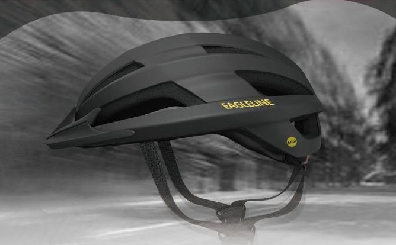

Master’s research · Unpublished work
Napal
A robotic companion for desk-based micro-breaks.
Master’s research and undergraduate thesis.
Master’s research · Unpublished work
A robotic companion for desk-based micro-breaks.

Undergraduate thesis · 2024
Exploring helmet-based navigation through vibration and voice.